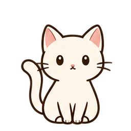

이미지
.png
내가 좋아하는 그림A DAILY LITTLE PAUSE
데스크톱을 위한 작은 쉼Make room for a little friend
이미지
.png
내가 좋아하는 그림움직이는 펫
.gif3D(GLB)
A closer look

A companion for your desktop
테스트 기준가 · 세금 별도
4,900원
정식 판매 전 · 실제 청구 없음
Beta는 이용 코드를 받은 테스터가 사용할 수 있습니다.